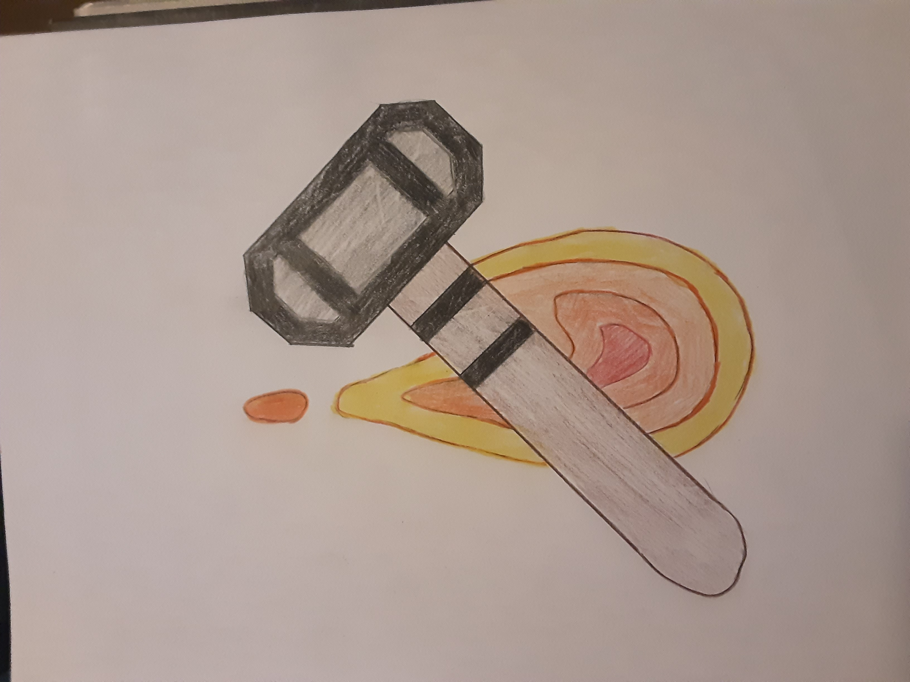

Hefesto é o deus do fogo, dos metais e da metalurgia na mitologia grega. Sua figura também estava associada ao trabalho, pois foi um grande forjador e joalheiro. Na mitologia romana, ele é chamado de Vulcano.
Hefesto foi responsável por forjar diversos objetos dos deuses como o escudo mágico de Zeus (Égide), a armadura de Aquiles, o arco e flecha de Eros, o cetro de Agamenon, o tridente de Poseidon, a cinta de Afrodite, dentre outros.
História
Filho de Zeus e Hera, Hefesto nasceu com uma deficiência: era coxo, ou seja, manco de uma perna. Reza a lenda que Hera o lançou do Monte Olimpo para que ninguém visse seu filho, pois estava envergonhada.
Depois da queda, ele foi encontrado e ficou sob os cuidados de Tétis, uma ninfa do mar. Com ela, aprendeu a manusear os metais e a trabalhar com eles.
Na lenda, ele foi aceito novamente no Monte Olimpo, mas recusou a proposta. No entanto, com a ajuda de Dionísio, Hefesto retornou ao Monte Olimpo, e estava certo de que ali se vingaria de sua mãe. Foi assim que ele lhe construiu um trono e quando ela sentou ficou presa. Assim, Hefesto pode chantagear seus pais pedindo-lhes em troca um casamento com a mulher mais bela.
O pedido de Hefesto foi aceito por ambos. A pedido de Zeus, Hefesto se casou com Afrodite, a deusa da beleza e do amor. No entanto, por conta de sua feiura, foi também rejeitado por ela. Por isso, eles não tiveram filhos e ainda foi traído diversas vezes por sua esposa.
Símbolos

Os símbolos de Hefesto são um martelo de ferreiro, uma bigorna e uma tenaz, embora por vezes tenha sido retratado empunhando um machado.
Meu nome é Pedro Correa Salerno, tenho 15 anos, eu gosto
muito de esportes, o esporte que mais gosto é o futebol,
torço para o Corinthians. Também gosto muito de estudar,
minha matéria favorita é matemática.